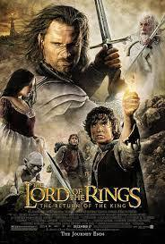

"The Return of the King" is a triumphant conclusion to the trilogy, delivering a grand finale that exceeds expectations. The film skillfully resolves the intricate storylines, leading to an emotionally charged and satisfying ending. From the epic battles to the heartfelt farewells, every moment is crafted with precision. The Return of the King solidifies its place as one of the greatest cinematic achievements in fantasy storytelling.
This cinematic masterpiece is a testament to Peter Jackson's directorial prowess. The performances, notably Elijah Wood's portrayal of Frodo and Viggo Mortensen's Aragorn, are captivating. The film's sweeping cinematography and Howard Shore's iconic score elevate it to unparalleled heights. "The Return of the King" not only concludes the trilogy but also leaves an indelible mark on the history of cinema.
